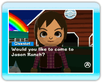

|
23
|
Communicate with Wii Friends
|
 |
|
Send pictures via Wii Message
Board
Pictures you posted on the Wii Message Board can be viewed and changed freely in the Wii Photo Channel in the Wii Menu. You can also send pictures from the Wii Message Board to a friend registered in Wii Friends. Receive an invitation to a Ranch via
WiiConnect24
If both you and your registered friend set up "Look at My
Ranch!," you sometimes get invited to your friend's Ranch when you
start a game. If you accept the invitation, you can view your
friend's Ranch-status info and take pictures. When you want to
return to your Ranch, select "Return." You cannot
select a particular Wii Friend to bring to your Ranch.
|
 |
 |
 |